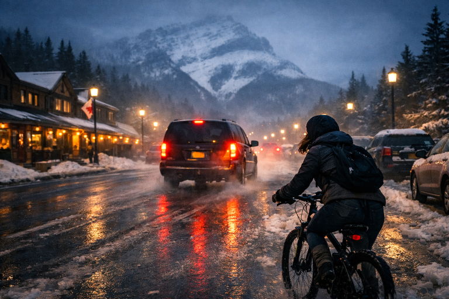
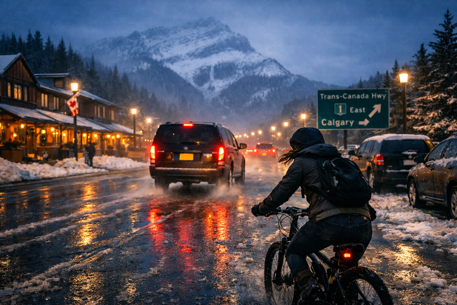

Chasing men on bike
|
Brooklyn’s heart slammed against her ribs as the van’s taillights flickered through the misty streets of Banff. Her uncle was behind the wheel—she was sure of it—and the sight sent a surge of adrenaline through her veins. The tires hissed over melting snow, the vehicle weaving between parked cars as if trying to shake her off. She gripped the handlebars of her bike tighter, the cold biting at her fingers, her breath coming in sharp bursts that vanished into the night. |
 |
|
 |
The chase tore through the quiet town, the crunch of gravel and the hum of her tires echoing off the frozen storefronts. Brooklyn leaned forward, muscles burning, eyes locked on the van’s shadow as it curved toward the highway. Every turn felt like a test of nerve and balance; every second, the distance between them stretched and snapped like a live wire. She didn’t know what waited inside that van—but she knew she couldn’t stop until she found out. |

| |
| Taken to airport | Finish (Google) |